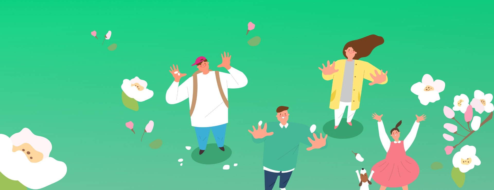
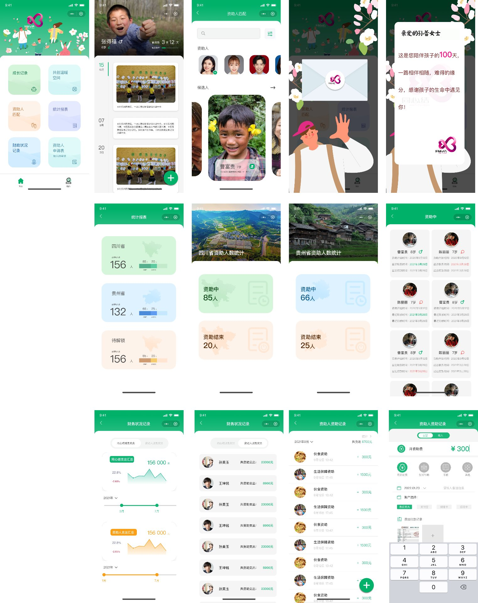
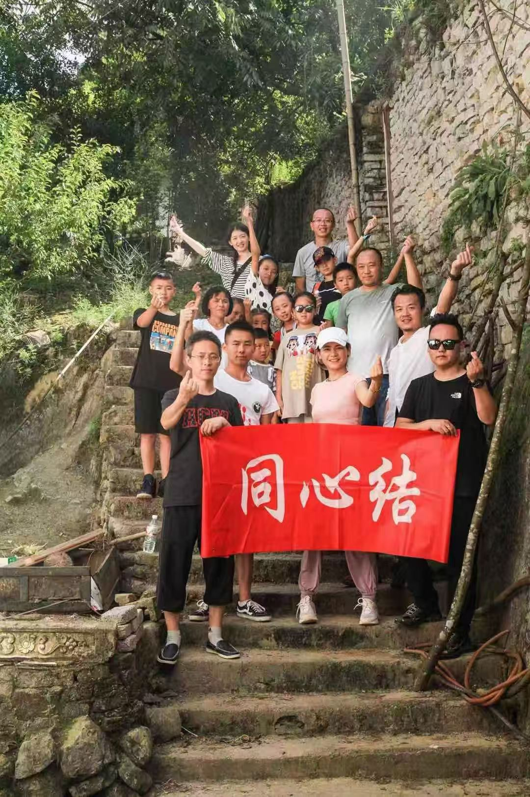
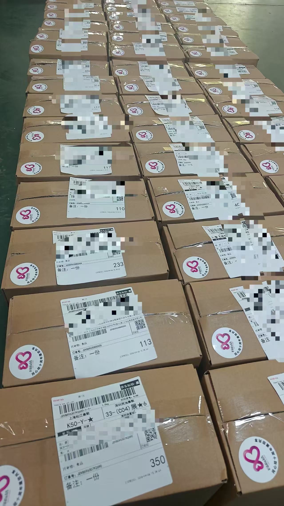
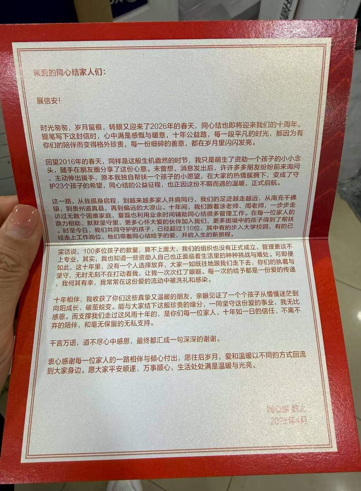

同心结
山区留守儿童资助系统 · 微信小程序
把"微信群转账 + Excel 表"的传统资助方式，升级为一个轻量、透明、有温度的小程序。 让 120+ 资助人能持续陪伴 100+ 山区儿童成长，让每一笔善款都看得见、每一份成长都被看见。
为什么要做同心结
这是一个由志愿者自发运营的儿童资助项目。最早期资助人和儿童的连接，靠的是微信群 + 个人转账 + Excel 表。 随着资助规模扩大到 100+ 儿童，"找不到对应儿童的近况"、 "不知道我的钱花到哪里"、 "管理员每月对账要花几小时" 这些问题集中爆发。
原模式无法继续支撑增长，公益项目濒临"想做更多但做不动"的瓶颈。
独立 PM
- 用户访谈与需求梳理（双端）
- 信息架构 · 0 → 1
- 原型设计 + 高保真稿
- 开发协同与上线推进
两端用户的核心痛点
资助方
- "我的钱真的花到孩子身上了吗？"
→ 期望资金透明，可查可溯 - "想多了解我资助的孩子"
→ 期望持续关系，看到孩子成长 - "群消息太多，找不到我对应的孩子"
→ 期望一对一信息聚合
管理方
- "对账每月要花一整个周末"
→ 期望自动化财务流水 - "新申请儿童的资料要群发给资助人挑"
→ 期望统一展示与匹配池 - "信息散在多个 Excel 表里"
→ 期望统一后台管理
三大核心模块，从 0 到 1
每个模块都对应着真实痛点的具体解法，而不是堆功能。
透明资金管理
月捐 + 流水可视，每一笔捐赠的去向都被记录、被看见。
- · 财务图表（趋势 / 分类）
- · 资助流水明细
- · 月度财报自动生成
资助关系管理
资助人 - 儿童双向匹配池，匹配关系一目了然。
- · 资助人匹配 / 待匹配
- · 省份维度统计（川 / 黔）
- · 资助状态：进行中 / 已结束
温情化儿童互动
不止是数据，更是陪伴。让资助人看见每一份具体的成长。
- · 成长记录时间轴
- · 共创涂鸦空间
- · 节日感谢信
小程序主要界面
从首页到财务管理，从资助人匹配到儿童成长记录。

不止是产品 · 是十年的同行
小程序只是工具。真正让我感动的，是工具背后这群人 — 资助人、孩子、和一封写了十年的感谢信。

看见这群人
志愿者带着"同心结"红色横幅走进山里，和孩子们一起留下合影。这是产品功能背后真正服务的人。

看见这件事
每一个箱子都贴着"同心结"标签和编号 110 / 113 / 233…，对应小程序里的每一份资助关系。

看见这份信任
"十年间，没有一个人选择放弃" — 来自同心结发起人在十周年时手写的感谢信。
"回望 2016 年的春天，我只是萌生了资助一个孩子的小小念头， 随手在朋友圈分享了这份心意。未曾想 — 原本我独自帮扶一个孩子的小愿望， 在大家的热情簇拥下，变成了守护 23 个孩子的希望。"
到 2026 年，这个数字已经超过了 110 位。其中有的孩子走入大学校园，有的已经走上工作岗位，他们带着同心结给予的爱，开启人生的新旅程。
上线后发生了什么
-
120+ 资助人从微信群迁移到小程序，月捐留存率显著提升。
-
管理员对账时间从一个周末压缩到几十分钟。
-
新增了"成长记录"和"感谢信"模块后，资助人复访频次明显增加。
-
项目持续运营至今，成为该公益组织的核心数字化基础设施。
这个项目教给我什么
公益产品的核心不是功能多，而是让信任可见。
每一个图表、每一行流水、每一张成长照片，都是在替"善意"传话。这种克制而具体的产品观，后来一直影响我做 AIGC 产品时的判断。